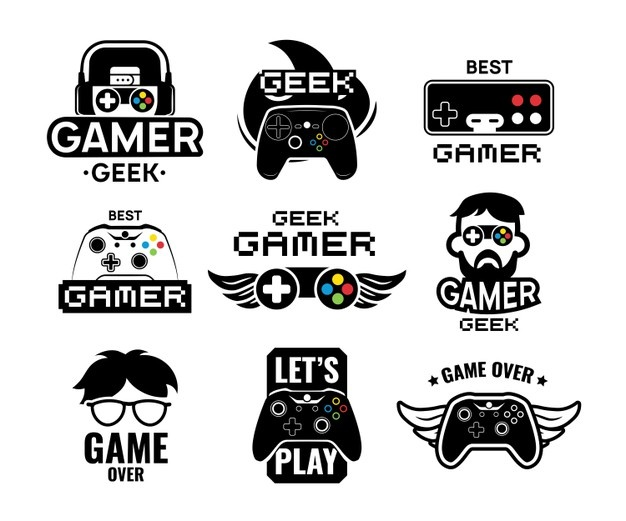

Development
Video game development and authorship, much like any other form of entertainment, is frequently a cross-disciplinary field. Video game developers, as employees within this industry are commonly referred, primarily include programmers and graphic designers. Over the years this has expanded to include almost every type of skill that one might see prevalent in the creation of any movie or television program, including sound designers, musicians, and other technicians; as well as skills that are specific to video games, such as the game designer. All of these are managed by producers. In the early days of the industry, it was more common for a single person to manage all of the roles needed to create a video game. As platforms have become more complex and powerful in the type of material they can present, larger teams have been needed to generate all of the art, programming, cinematography, and more. This is not to say that the age of the "one-man shop" is gone, as this is still sometimes found in the casual gaming and handheld markets,[50] where smaller games are prevalent due to technical limitations such as limited RAM or lack of dedicated 3D graphics rendering capabilities on the target platform (e.g., some PDAs).[51] Video games are programmed like any other piece of computer software. Prior to the mid-1970s, arcade and home consoles were programmed by assembling discrete electro-mechanical components on circuit boards, which limited games to relatively simple logic. By 1975, low-cost microprocessors were available at volume to be used for video game hardware, which allowed game developers to program more detailed games, widening the scope of what was possible.[52][53] Ongoing improvements in computer hardware technology has expanded what has become possible to create in video games, coupled with convergence of common hardware between console, computer, and arcade platforms to simplify the development process.[54] Today, game developers have a number of commercial and open source tools available for use to make games, often which are across multiple platforms to support portability, or may still opt to create their own for more specialized features and direct control of the game. Today, many games are built around a game engine that handles the bulk of the game's logic, gameplay, and rendering. These engines can be augmented with specialized engines for specific features, such as a physics engine that simulates the physics of objects in real-time. A variety of middleware exists to help developers to access other features, such as for playback of videos within games, network-oriented code for games that communicate via online services, matchmaking for online games, and similar features. These features can be used from a devlopers' programming language of choice, or they may opt to also use game development kits that minimize the amount of direct programming they have to do but can also limit the amount of customization they can add into a game. Like all software, video games usually undergo quality testing before release to assure there are no bugs or glitches in the product, though frequently developers will release patches and updates.
Game theory and Studies
Although departments of computer science have been studying the technical aspects of video games for years, theories that examine games as an artistic medium are a relatively recent development in the humanities. The two most visible schools in this emerging field are ludology and narratology. Narrativists approach video games in the context of what Janet Murray calls "Cyberdrama". That is to say, their major concern is with video games as a storytelling medium, one that arises out of interactive fiction. Murray puts video games in the context of the Holodeck, a fictional piece of technology from Star Trek, arguing for the video game as a medium in which the player is allowed to become another person, and to act out in another world.[58] This image of video games received early widespread popular support, and forms the basis of films such as Tron, eXistenZ and The Last Starfighter. Ludologists break sharply and radically from this idea. They argue that a video game is first and foremost a game, which must be understood in terms of its rules, interface, and the concept of play that it deploys. Espen J. Aarseth argues that, although games certainly have plots, characters, and aspects of traditional narratives, these aspects are incidental to gameplay. For example, Aarseth is critical of the widespread attention that narrativists have given to the heroine of the game Tomb Raider, saying that "the dimensions of Lara Croft's body, already analyzed to death by film theorists, are irrelevant to me as a player, because a different-looking body would not make me play differently... When I play, I don't even see her body, but see through it and past it."[59] Simply put, ludologists reject traditional theories of art because they claim that the artistic and socially relevant qualities of a video game are primarily determined by the underlying set of rules, demands, and expectations imposed on the player.
Intellectual property for video games
Most commonly, video games are protected by copyright, though both patents and trademarks have been used as well. Though local copyright regulations vary to the degree of protection, video games qualify as copyrighted visual-audio works, and enjoy cross-country protection under the Berne Convention.[61] This typically only applies to the underlying code, as well as to the artistic aspects of the game such as its writing, art assets, and music. Gameplay itself is generally not considered copyrightable; in the United States among other countries, video games are considered to fall into the idea–expression distinction in that it is how the game is presented and expressed to the player that can be copyrighted, but not the underlying principles of the game.[62] Because gameplay is normally ineligible for copyright, gameplay ideas in popular games are often replicated and built upon in other games. At times, this repurposing of gameplay can be seen as beneficial and a fundamental part of how the industry has grown by building on the ideas of others.[63][64] For example Doom (1993) and Grand Theft Auto III (2001) introduced gameplay that created popular new game genres, the first-person shooter and the Grand Theft Auto clone, respectively, in the few years after their release.[65][66] However, at times and more frequently at the onset of the industry, developers would intentionally create video game clones of successful games and game hardware with few changes, which led to the flooded arcade and dedicated home console market around 1978.[63][67][64] Cloning is also a major issue with countries that do not have strong intellectual property protection laws, such as within China. The lax oversight by China's government and the difficulty for foreign companies to take Chinese entities to court had enabled China to support a large grey market of cloned hardware and software systems.[68] The industry remains challenged to distinguish between creating new games based on refinements of past successful games to create a new type of gameplay, and intentionally creating a clone of a game that may simply swap out art assets.
History
The early history of the video game industry, following the first game hardware releases and through 1983, had little structure. While video games quickly took off, the newfound industry was mainly composed of game developers with little business experience, and led to numerous companies forming simply to create of clones of popular titles to try to capitalize on the market.[70] Due to loss of publishing control and oversaturation of the market, the North American market crashed in 1983, dropping from revenues of around $3 billion in 1983 to $100 million by 1985. Many of the North American companies created in the prior years closed down. Japan's growing game industry was briefly shocked by this crash but had sufficient longevity to withstand the short-term effects, and Nintendo helped to revitalize the industry with the release of the Nintendo Entertainment System in North America in 1985.[70] Along with it, Nintendo established a number of core industrial practices to prevent unlicensed game development and control game distribution on their platform, methods that continue to be used by console manufacturers today.[70] The industry remained more conservative following the 1983 crash, forming around the concept of publisher-developer dichotomies, and by the 2000s, leading to the industry centralizing around low-risk, triple-A games and studios with large development budgets of at least $10 million or more.[71] The advent of the Internet brought digital distribution as a viable means to distribute games, and contributed to the growth of more riskier, experimental independent game development as an alternative to triple-A games in the late 2000s and which has continued to grow as a significant portion of the video game industry.